MUSP Studio 0.1.1 验收报告
当前结论仅来自以下三份本次记录，并核对安装包与已安装程序的 SHA256。旧版本安装、升级、七页巡检和卸载记录在文末历史区单独保留，不代表本版本重复执行。
本次对端使用真实本机 UDP socket，未连接外部硬件；全新无 WebView2 的离线虚拟机尚未验证。应用未配置代码签名，SHA256 用于完整性核验。
用户已取消高频压力验收。原失败或中止样本仍保留，不作为本次交付门槛，也不据此声称达到高吞吐指标。
当前安装产物
安装包：MUSP-Studio_0.1.1_x64-setup.exe
安装包 SHA256：fcae7d347725552bd157aa10cfae895e871232e0aa5d151671e23c5ed894aa00
已安装 EXE SHA256：5afa122f50c57838306e422d718ab77093619bbe009840517c3186b4727b314b
隔离安装后应用注册信息已恢复。
本次隔离安装原始记录
原始记录：test-results/flow-workspace-install/report.json
{
"userProcesses": [],
"exitCode": 0,
"existingInstallationUnchanged": true,
"registrationRestored": true,
"passed": true,
"installedSha256": "5AFA122F50C57838306E422D718AB77093619BBE009840517C3186B4727B314B",
"startedAt": "2026-10-15T14:11:46.0206356+08:00",
"installerSha256": "FCAE7D347725552BD157AA10CFAE895E871232E0AA5D151671E23C5ED894AA00",
"installer": "E:\\My_Project\\Protocol_Simulator\\musp-studio\\release\\MUSP-Studio_0.1.1_x64-setup.exe",
"installTarget": "E:\\My_Project\\Protocol_Simulator\\musp-studio\\test-results\\flow-workspace-install\\installed",
"binaryVerification": "only official Tauri NSIS bundle marker differs"
}已安装程序的真实 MUSP 自测
- SQLite迁移
- 内置XML编译
- Rust真实UDP双端点
- 编码与CRC
- 响应唯一匹配
- 0x22业务提交
- 报文SQLite落库
本次安装版自测原始记录
原始记录：test-results/flow-workspace-installed-selftest/self-test.json
{
"checks": [
"SQLite迁移",
"内置XML编译",
"Rust真实UDP双端点",
"编码与CRC",
"响应唯一匹配",
"0x22业务提交",
"报文SQLite落库"
],
"dataDirectory": "E:\\My_Project\\Protocol_Simulator\\musp-studio\\test-results\\flow-workspace-installed-selftest",
"packetCount": 4,
"passed": true,
"stats": {
"queueDropped": 0,
"rx": 2,
"socketErrors": 0,
"tx": 2
},
"version": "0.1.1"
}已安装程序的流程页真实 UDP 验收
- 唯一匹配监听端点自动选择，启动入口始终可见
- 普通字段直接填写，修改后必须发布才能运行
- 发送前Rust编码预览可见，预览不发送也不创建运行实例
- 主动发送与外部UDP对端响应均在流程页显示，按本次实例过滤
- 同页HEX、十进制、Bit与字段解析双向定位，预览面板不串选
- 被动等待真实73报文后按接收字段回复21，不触发MUSP设备或资源规则
- 等待超时就地显示失败，没有伪造收发记录
实际页面来源：http://tauri.localhost/；未处理脚本异常：0；主动与被动流程实际报文总数：4。
本次流程页验收原始记录
原始记录：test-results/flow-workspace-installed/report.json
{
"passed": true,
"checks": [
"唯一匹配监听端点自动选择，启动入口始终可见",
"普通字段直接填写，修改后必须发布才能运行",
"发送前Rust编码预览可见，预览不发送也不创建运行实例",
"主动发送与外部UDP对端响应均在流程页显示，按本次实例过滤",
"同页HEX、十进制、Bit与字段解析双向定位，预览面板不串选",
"被动等待真实73报文后按接收字段回复21，不触发MUSP设备或资源规则",
"等待超时就地显示失败，没有伪造收发记录"
],
"pageErrors": [],
"dataDir": "E:\\My_Project\\Protocol_Simulator\\musp-studio\\test-results\\flow-workspace-installed-data",
"url": "http://tauri.localhost/",
"endpoint": "127.0.0.1:17049",
"activeRun": "6a0cccdd-c050-4747-8a75-93c641d54d67",
"peerReceived": "21 2B 81 02 07 09",
"passiveRun": "01294200-dcf5-48e9-9342-0ef80f209d5d",
"timeoutRun": "cb2dab92-2521-4fbb-9802-55094cb51c31",
"packetCount": 4
}主动发送与响应：1440 像素窗口
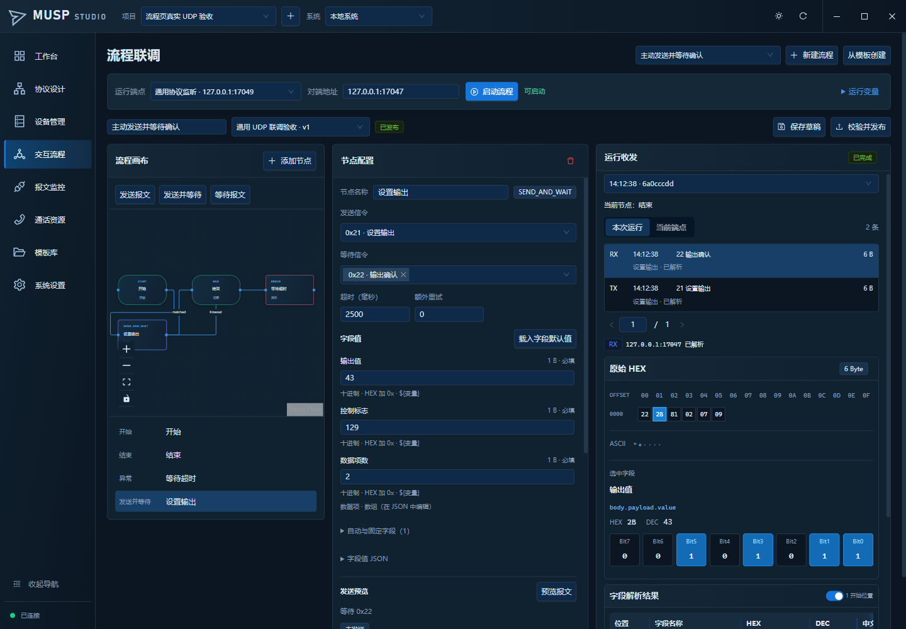
主动发送与响应：1280 像素窗口
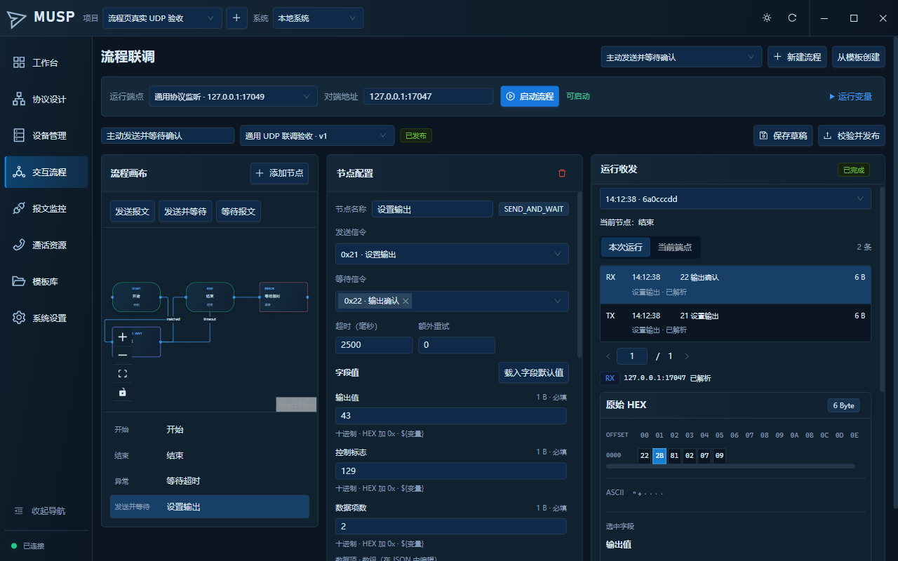
被动等待后按收到的字段回复
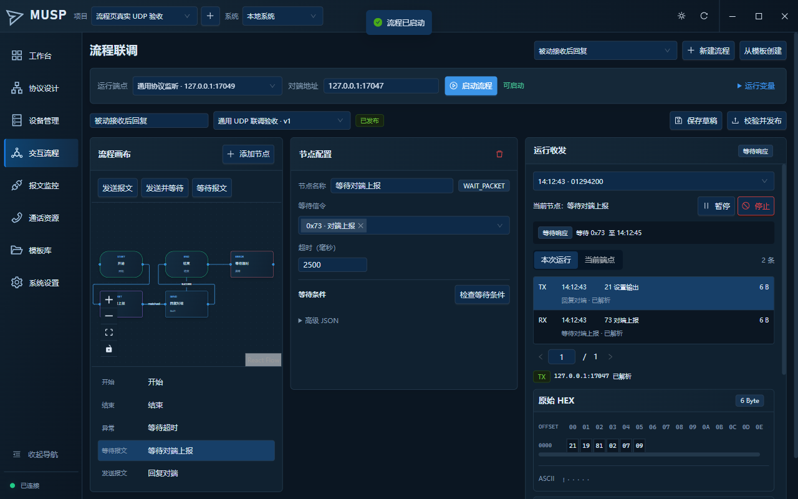
等待超时与失败显示
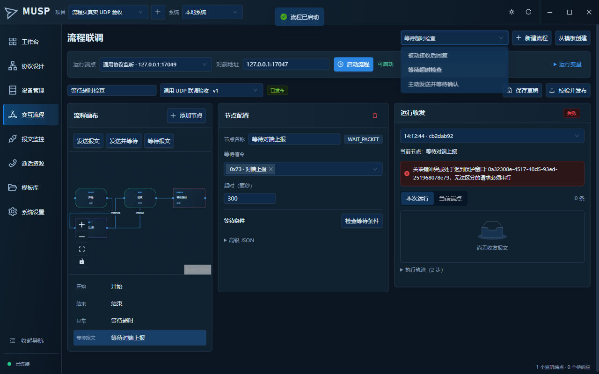
历史证据
0.1.0 历史安装、七页巡检与卸载记录（不计入本次通过结论）
下列原始记录与截图属于此前的 0.1.0 交付及文案更新；保留其原始版本、文件名、散列和测试范围。
0.1.0 首次安装、升级、自测与卸载记录
原始记录：test-results/installation-final.json
{
"passed": true,
"version": "0.1.0",
"rustTests": 106,
"frontendTests": 36,
"installerSHA256": "B26284747E9517ACFE3F17B86CC80239D31157A5FD051E1D14136BC21D06320C",
"installedBinarySHA256": "A06ECAE9C36EE25309C74D4AE5D1A12F3C4CBA481D07DFA993108F4343D75957",
"installation": {
"ExitCode": 0,
"InstallDirectory": "E:\\My_Project\\Protocol_Simulator\\musp-studio\\test-results\\installed",
"SourceHash": "B1A6E9EBD95079848B59A59D8C022AA0AF1988B1DE2E03DFDA0CF2AB8655410F",
"InstalledHash": "A06ECAE9C36EE25309C74D4AE5D1A12F3C4CBA481D07DFA993108F4343D75957",
"Matches": false,
"PackagedBinaryVerified": true,
"BundleMarker": "Tauri NSIS packaging changes only __TAURI_BUNDLE_TYPE_VAR_UNK to __TAURI_BUNDLE_TYPE_VAR_NSS"
},
"selfTest": {
"ExitCode": 0,
"Result": {
"checks": [
"SQLite迁移",
"内置XML编译",
"Rust真实UDP双端点",
"编码与CRC",
"响应唯一匹配",
"0x22业务提交",
"报文SQLite落库"
],
"dataDirectory": "E:\\My_Project\\Protocol_Simulator\\musp-studio\\test-results\\installed-self-test-final",
"packetCount": 4,
"passed": true,
"stats": {
"queueDropped": 0,
"rx": 2,
"socketErrors": 0,
"tx": 2
},
"version": "0.1.0"
}
},
"desktop": {
"pageErrors": [],
"packetCount": 49,
"passed": true,
"checks": [
"真实Tauri IPC、项目隔离和两个Rust UDP socket",
"0x21真实发送与0x22逐项AA确认生成5台离线设备",
"5台设备实际注册握手后ONLINE，状态来自后端",
"损坏UDP保留原始数据、RX/TX数据库过滤正确",
"损坏报文UI不崩溃，HEX与解析字段双向选择",
"应用内Monaco XML通过Rust语法与DSL校验",
"统一标题栏、真实最小化与最大化/还原",
"可视化流程保存/发布/真实运行，草稿禁止启动，配置不重置在线设备",
"七个功能页面连接真实桌面服务并正常显示",
"主题切换即时生效并在重载后保留",
"完整报文JSON/JSONL/CSV与项目ZIP导出导入",
"WebView2无未处理JavaScript异常"
],
"url": "http://tauri.localhost/"
},
"uninstallation": {
"ExitCode": 0,
"ApplicationRemoved": true,
"DataDirectory": "C:\\Users\\KYD-PC-357\\AppData\\Roaming\\dev.musp.studio",
"DatabasePreserved": true,
"DatabaseUnchanged": true,
"BeforeHash": "FC5124E843139B25D9595B3DB6639AB490C6DC645BD169B257D860556D70A199",
"AfterHash": "FC5124E843139B25D9595B3DB6639AB490C6DC645BD169B257D860556D70A199",
"AppProcessExited": true
},
"currentInstallation": {
"ExitCode": 0,
"InstallDirectory": "C:\\Users\\KYD-PC-357\\AppData\\Local\\MUSP Studio",
"Executable": "C:\\Users\\KYD-PC-357\\AppData\\Local\\MUSP Studio\\musp-studio.exe",
"SHA256": "A06ECAE9C36EE25309C74D4AE5D1A12F3C4CBA481D07DFA993108F4343D75957"
},
"freshOfflineVirtualMachineTested": false
}0.1.0 已安装版七页与功能巡检
原始记录：test-results/desktop-installed-final/report.json
{
"passed": true,
"checks": [
"真实Tauri IPC、项目隔离和两个Rust UDP socket",
"0x21真实发送与0x22逐项AA确认生成5台离线设备",
"5台设备实际注册握手后ONLINE，状态来自后端",
"损坏UDP保留原始数据、RX/TX数据库过滤正确",
"损坏报文UI不崩溃，HEX与解析字段双向选择",
"应用内Monaco XML通过Rust语法与DSL校验",
"统一标题栏、真实最小化与最大化/还原",
"可视化流程保存/发布/真实运行，草稿禁止启动，配置不重置在线设备",
"七个功能页面连接真实桌面服务并正常显示",
"主题切换即时生效并在重载后保留",
"完整报文JSON/JSONL/CSV与项目ZIP导出导入",
"WebView2无未处理JavaScript异常"
],
"pageErrors": [],
"screenshots": [
"E:\\My_Project\\Protocol_Simulator\\musp-studio\\test-results\\desktop-installed-final\\page-1.png",
"E:\\My_Project\\Protocol_Simulator\\musp-studio\\test-results\\desktop-installed-final\\page-2.png",
"E:\\My_Project\\Protocol_Simulator\\musp-studio\\test-results\\desktop-installed-final\\page-3.png",
"E:\\My_Project\\Protocol_Simulator\\musp-studio\\test-results\\desktop-installed-final\\page-4.png",
"E:\\My_Project\\Protocol_Simulator\\musp-studio\\test-results\\desktop-installed-final\\page-5.png",
"E:\\My_Project\\Protocol_Simulator\\musp-studio\\test-results\\desktop-installed-final\\page-6.png",
"E:\\My_Project\\Protocol_Simulator\\musp-studio\\test-results\\desktop-installed-final\\page-7.png"
],
"url": "http://tauri.localhost/",
"projectId": "21b7238d-1a30-4005-bc99-cc8ce417aace",
"packetCount": 49,
"exports": [
{
"path": "C:\\Users\\KYD-PC-357\\AppData\\Roaming\\dev.musp.studio\\export\\packets-1792033822713.json",
"rows": 49
},
{
"path": "C:\\Users\\KYD-PC-357\\AppData\\Roaming\\dev.musp.studio\\export\\packets-1792033822768.jsonl",
"rows": 49
},
{
"path": "C:\\Users\\KYD-PC-357\\AppData\\Roaming\\dev.musp.studio\\export\\packets-1792033822792.csv",
"rows": 49
}
]
}0.1.0 文案更新后的安装与自测记录
原始记录：test-results/copy-cleanup-install.json
{
"selfTest": {
"checks": [
"SQLite迁移",
"内置XML编译",
"Rust真实UDP双端点",
"编码与CRC",
"响应唯一匹配",
"0x22业务提交",
"报文SQLite落库"
],
"dataDirectory": "E:\\My_Project\\Protocol_Simulator\\musp-studio\\test-results\\copy-cleanup-self-test",
"packetCount": 4,
"passed": true,
"stats": {
"queueDropped": 0,
"rx": 2,
"socketErrors": 0,
"tx": 2
},
"version": "0.1.0"
},
"installerBytes": 224128852,
"executable": "C:\\Users\\KYD-PC-357\\AppData\\Local\\MUSP Studio\\musp-studio.exe",
"installedSHA256": "5EAD8CA6004E5D7E4CDC435F6D74DFE107B53FA4ABA0AB71CDD35B28F82B03AC",
"passed": true,
"installerSHA256": "6E260B2350BF5F72CAA23216CE0280B42B2455B85BFD144CC1E8E433C126B675",
"installerExitCode": 0,
"selfTestExitCode": 0,
"frontendTests": 36,
"inspectedPages": 8,
"pageErrors": [],
"packagedBinaryVerified": true,
"project": "MUSP v0.8 信令交互演示",
"messageCount": 34,
"packetRecords": 108,
"checks": [
"配置控制标志与Bit选中",
"AA / 170 / 配置成功",
"字段和HEX双向定位",
"八页均无标题副文案"
],
"fullUninstallRegression": "首版已通过，本轮未重复卸载"
}0.1.0 历史截图：工作台
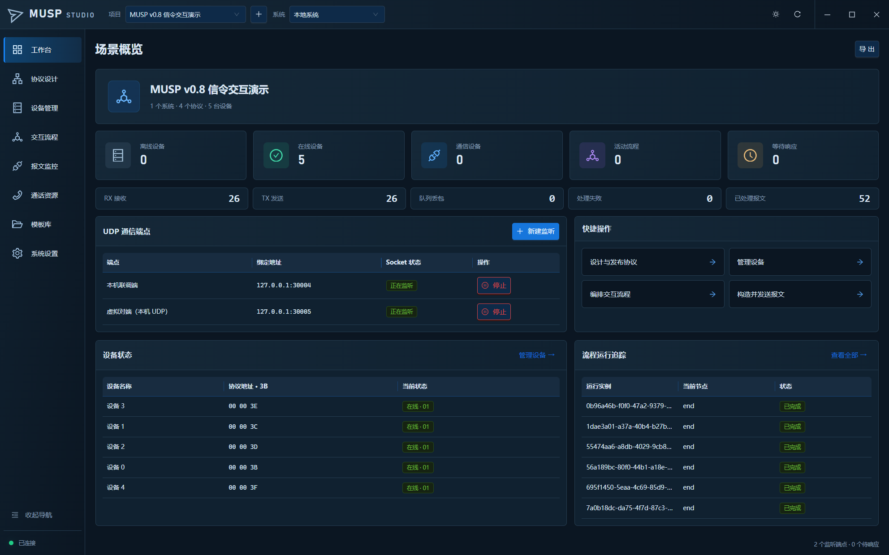
0.1.0 历史截图：协议设计
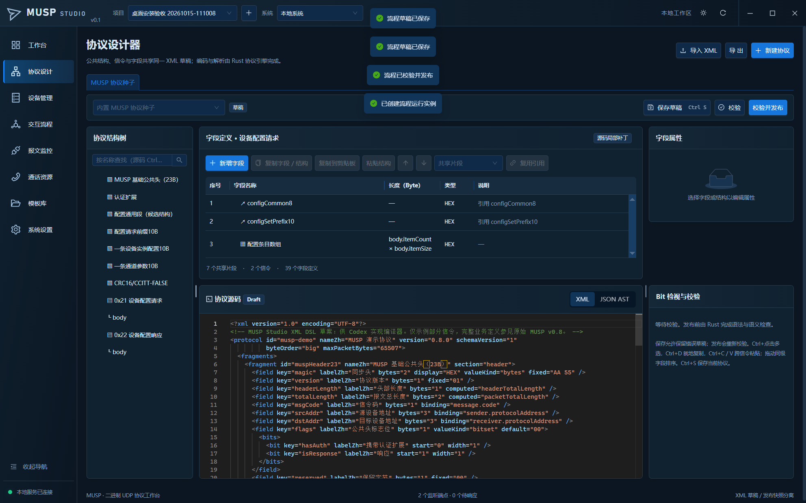
0.1.0 历史截图：设备管理
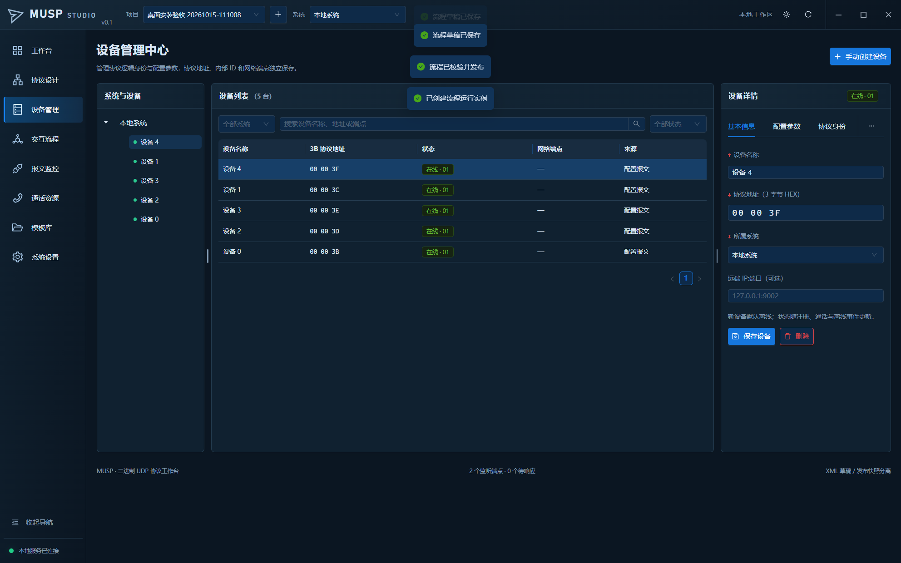
0.1.0 历史截图：交互流程
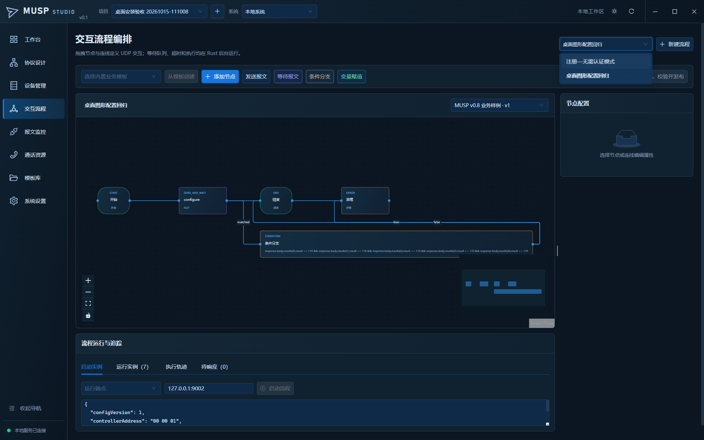
0.1.0 历史截图：报文监控
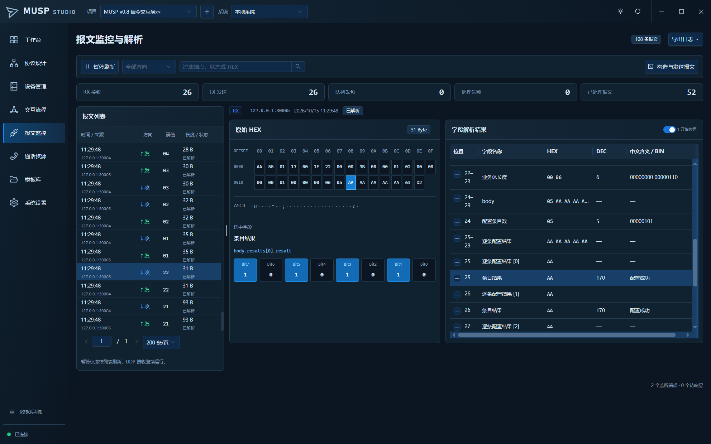
0.1.0 历史截图：通话资源
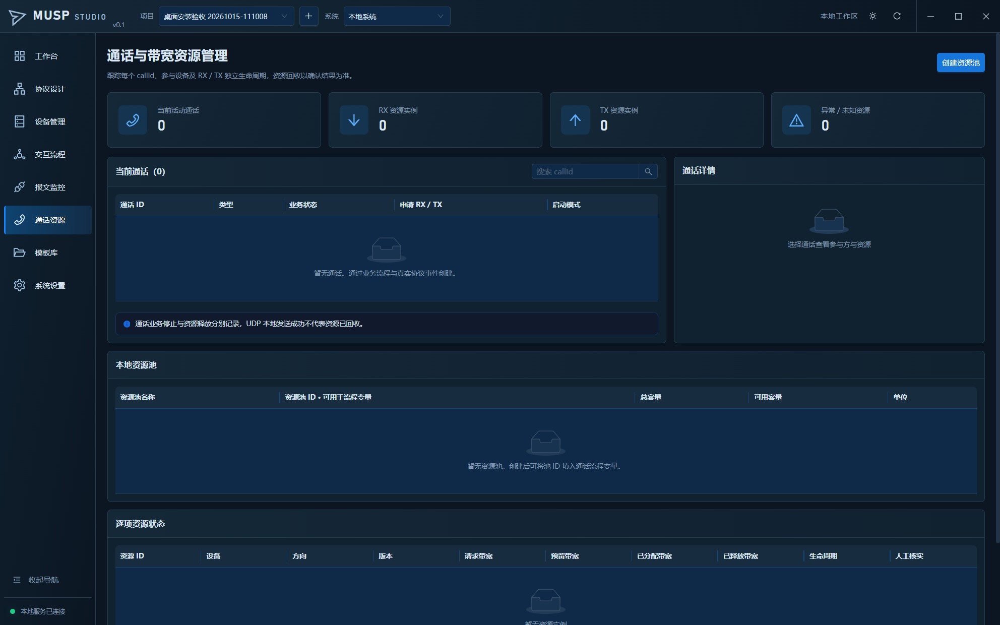
0.1.0 历史截图：模板库
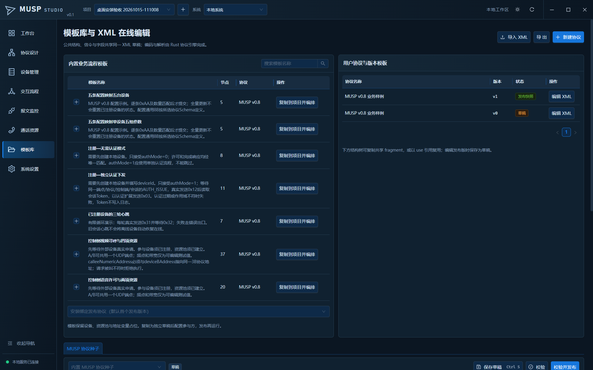